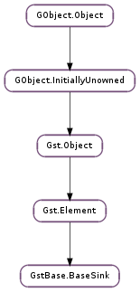

| Subclasses: | ClutterGst.VideoSink, GstApp.AppSink, GstAudio.AudioBaseSink, GstVideo.VideoSink |
|---|
| do_preroll(obj) | |
| get_blocksize() | |
| get_last_sample() | |
| get_latency() | |
| get_max_bitrate() | |
| get_max_lateness() | |
| get_render_delay() | |
| get_sync() | |
| get_throttle_time() | |
| get_ts_offset() | |
| is_async_enabled() | |
| is_last_sample_enabled() | |
| is_qos_enabled() | |
| query_latency() | |
| set_async_enabled(enabled) | |
| set_blocksize(blocksize) | |
| set_last_sample_enabled(enabled) | |
| set_max_bitrate(max_bitrate) | |
| set_max_lateness(max_lateness) | |
| set_qos_enabled(enabled) | |
| set_render_delay(delay) | |
| set_sync(sync) | |
| set_throttle_time(throttle) | |
| set_ts_offset(offset) | |
| wait(time) | |
| wait_clock(time) | |
| wait_preroll() |
| Name | Type | Flags | Description |
|---|---|---|---|
| async | bool | r/w | Go asynchronously to PAUSED |
| blocksize | int | r/w | Size in bytes to pull per buffer (0 = default) |
| enable-last-sample | bool | r/w | Enable the last-sample property |
| last-sample | Gst.Sample | r | The last sample received in the sink |
| max-bitrate | int | r/w | The maximum bits per second to render (0 = disabled) |
| max-lateness | int | r/w | Maximum number of nanoseconds that a buffer can be late before it is dropped (-1 unlimited) |
| qos | bool | r/w | Generate Quality-of-Service events upstream |
| render-delay | int | r/w | Additional render delay of the sink in nanoseconds |
| sync | bool | r/w | Sync on the clock |
| throttle-time | int | r/w | The time to keep between rendered buffers (0 = disabled) |
| ts-offset | int | r/w | Timestamp offset in nanoseconds |
None
| Name | Type | Access |
|---|---|---|
| can_activate_pull | bool | r |
| can_activate_push | bool | r |
| element | Gst.Element | r |
| eos | bool | r |
| flushing | bool | r |
| have_newsegment | bool | r |
| have_preroll | bool | r |
| max_lateness | int | r |
| need_preroll | bool | r |
| pad_mode | Gst.PadMode | r |
| playing_async | bool | r |
| preroll_cond | GLib.Cond | r |
| running | bool | r |
| segment | Gst.Segment | r |
| sinkpad | Gst.Pad | r |
| sync | bool | r |
Bases: Gst.Element
GstBase.BaseSink is the base class for sink elements in GStreamer, such as xvimagesink or filesink. It is a layer on top of Gst.Element that provides a simplified interface to plugin writers. GstBase.BaseSink handles many details for you, for example: preroll, clock synchronization, state changes, activation in push or pull mode, and queries.
In most cases, when writing sink elements, there is no need to implement class methods from Gst.Element or to set functions on pads, because the GstBase.BaseSink infrastructure should be sufficient.
GstBase.BaseSink provides support for exactly one sink pad, which should be named “sink”. A sink implementation (subclass of GstBase.BaseSink ) should install a pad template in its class_init function, like so:
static void
my_element_class_init (GstMyElementClass *klass)
{
GstElementClass *gstelement_class = GST_ELEMENT_CLASS (klass);
// sinktemplate should be a #GstStaticPadTemplate with direction
// #GST_PAD_SINK and name "sink"
gst_element_class_add_pad_template (gstelement_class,
gst_static_pad_template_get (&sinktemplate));
gst_element_class_set_static_metadata (gstelement_class,
"Sink name",
"Sink",
"My Sink element",
"The author <my.sink@my.email>");
}
GstBase.BaseSink will handle the prerolling correctly. This means that it will return Gst.StateChangeReturn.ASYNC from a state change to PAUSED until the first buffer arrives in this element. The base class will call the GstBase.BaseSinkClass.preroll() vmethod with this preroll buffer and will then commit the state change to the next asynchronously pending state.
When the element is set to PLAYING, GstBase.BaseSink will synchronise on the clock using the times returned from GstBase.BaseSinkClass.get_times(). If this function returns Gst.CLOCK_TIME_NONE for the start time, no synchronisation will be done. Synchronisation can be disabled entirely by setting the object GstBase.BaseSink :sync property to False.
After synchronisation the virtual method GstBase.BaseSinkClass.render() will be called. Subclasses should minimally implement this method.
Subclasses that synchronise on the clock in the GstBase.BaseSinkClass.render() method are supported as well. These classes typically receive a buffer in the render method and can then potentially block on the clock while rendering. A typical example is an audiosink. These subclasses can use GstBase.BaseSink.wait_preroll () to perform the blocking wait.
Upon receiving the EOS event in the PLAYING state, GstBase.BaseSink will wait for the clock to reach the time indicated by the stop time of the last GstBase.BaseSinkClass.get_times() call before posting an EOS message. When the element receives EOS in PAUSED, preroll completes, the event is queued and an EOS message is posted when going to PLAYING.
GstBase.BaseSink will internally use the Gst.EventType.SEGMENT events to schedule synchronisation and clipping of buffers. Buffers that fall completely outside of the current segment are dropped. Buffers that fall partially in the segment are rendered (and prerolled). Subclasses should do any subbuffer clipping themselves when needed.
GstBase.BaseSink will by default report the current playback position in Gst.Format.TIME based on the current clock time and segment information. If no clock has been set on the element, the query will be forwarded upstream.
The GstBase.BaseSinkClass.set_caps() function will be called when the subclass should configure itself to process a specific media type.
The GstBase.BaseSinkClass.start() and GstBase.BaseSinkClass.stop() virtual methods will be called when resources should be allocated. Any GstBase.BaseSinkClass.preroll(), GstBase.BaseSinkClass.render() and GstBase.BaseSinkClass.set_caps() function will be called between the GstBase.BaseSinkClass.start() and GstBase.BaseSinkClass.stop() calls.
The GstBase.BaseSinkClass.event() virtual method will be called when an event is received by GstBase.BaseSink. Normally this method should only be overriden by very specific elements (such as file sinks) which need to handle the newsegment event specially.
The GstBase.BaseSinkClass.unlock() method is called when the elements should unblock any blocking operations they perform in the GstBase.BaseSinkClass.render() method. This is mostly useful when the GstBase.BaseSinkClass.render() method performs a blocking write on a file descriptor, for example.
The GstBase.BaseSink :max-lateness property affects how the sink deals with buffers that arrive too late in the sink. A buffer arrives too late in the sink when the presentation time (as a combination of the last segment, buffer timestamp and element base_time) plus the duration is before the current time of the clock. If the frame is later than max-lateness, the sink will drop the buffer without calling the render method. This feature is disabled if sync is disabled, the GstBase.BaseSinkClass.get_times() method does not return a valid start time or max-lateness is set to -1 (the default). Subclasses can use GstBase.BaseSink.set_max_lateness () to configure the max-lateness value.
The GstBase.BaseSink :qos property will enable the quality-of-service features of the basesink which gather statistics about the real-time performance of the clock synchronisation. For each buffer received in the sink, statistics are gathered and a QOS event is sent upstream with these numbers. This information can then be used by upstream elements to reduce their processing rate, for example.
The GstBase.BaseSink :async property can be used to instruct the sink to never perform an ASYNC state change. This feature is mostly usable when dealing with non-synchronized streams or sparse streams.
Last reviewed on 2007-08-29 (0.10.15)
| Parameters: | obj (Gst.MiniObject) – the mini object that caused the preroll |
|---|---|
| Returns: | Gst.FlowReturn.OK if the preroll completed and processing can continue. Any other return value should be returned from the render vmethod. |
| Return type: | Gst.FlowReturn |
If the sink spawns its own thread for pulling buffers from upstream it should call this method after it has pulled a buffer. If the element needed to preroll, this function will perform the preroll and will then block until the element state is changed.
This function should be called with the PREROLL_LOCK held.
| Returns: | the number of bytes sink will pull in pull mode. |
|---|---|
| Return type: | int |
Get the number of bytes that the sink will pull when it is operating in pull mode.
| Returns: | a Gst.Sample. gst_sample_unref() after usage. This function returns None when no buffer has arrived in the sink yet or when the sink is not in PAUSED or PLAYING. |
|---|---|
| Return type: | Gst.Sample |
Get the last sample that arrived in the sink and was used for preroll or for rendering. This property can be used to generate thumbnails.
The Gst.Caps on the sample can be used to determine the type of the buffer.
Free-function: gst_sample_unref
| Returns: | The configured latency. |
|---|---|
| Return type: | int |
Get the currently configured latency.
| Returns: | the maximum number of bits per second sink will render. |
|---|---|
| Return type: | int |
Get the maximum amount of bits per second that the sink will render.
| Returns: | The maximum time in nanoseconds that a buffer can be late before it is dropped and not rendered. A value of -1 means an unlimited time. |
|---|---|
| Return type: | int |
Gets the max lateness value. See GstBase.BaseSink.set_max_lateness for more details.
| Returns: | the render delay of sink. |
|---|---|
| Return type: | int |
Get the render delay of sink. see GstBase.BaseSink.set_render_delay () for more information about the render delay.
| Returns: | True if the sink is configured to synchronize against the clock. |
|---|---|
| Return type: | bool |
Checks if sink is currently configured to synchronize against the clock.
| Returns: | the number of nanoseconds sink will put between frames. |
|---|---|
| Return type: | int |
Get the time that will be inserted between frames to control the maximum buffers per second.
| Returns: | The synchronisation offset. |
|---|---|
| Return type: | int |
Get the synchronisation offset of sink.
| Returns: | True if the sink is configured to perform asynchronous state changes. |
|---|---|
| Return type: | bool |
Checks if sink is currently configured to perform asynchronous state changes to PAUSED.
| Returns: | True if the sink is configured to store the last received sample. |
|---|---|
| Return type: | bool |
Checks if sink is currently configured to store the last received sample in the last-sample property.
| Returns: | True if the sink is configured to perform Quality-of-Service. |
|---|---|
| Return type: | bool |
Checks if sink is currently configured to send Quality-of-Service events upstream.
| Returns: | True if the query succeeded. |
|---|---|
| Return type: | bool, live: bool, upstream_live: bool, min_latency: int, max_latency: int |
Query the sink for the latency parameters. The latency will be queried from the upstream elements. live will be True if sink is configured to synchronize against the clock. upstream_live will be True if an upstream element is live.
If both live and upstream_live are True, the sink will want to compensate for the latency introduced by the upstream elements by setting the min_latency to a strictly possitive value.
This function is mostly used by subclasses.
| Parameters: | enabled (bool) – the new async value. |
|---|
Configures sink to perform all state changes asynchronusly. When async is disabled, the sink will immediately go to PAUSED instead of waiting for a preroll buffer. This feature is useful if the sink does not synchronize against the clock or when it is dealing with sparse streams.
| Parameters: | blocksize (int) – the blocksize in bytes |
|---|
Set the number of bytes that the sink will pull when it is operating in pull mode.
| Parameters: | enabled (bool) – the new enable-last-sample value. |
|---|
Configures sink to store the last received sample in the last-sample property.
| Parameters: | max_bitrate (int) – the max_bitrate in bits per second |
|---|
Set the maximum amount of bits per second that the sink will render.
| Parameters: | max_lateness (int) – the new max lateness value. |
|---|
Sets the new max lateness value to max_lateness. This value is used to decide if a buffer should be dropped or not based on the buffer timestamp and the current clock time. A value of -1 means an unlimited time.
| Parameters: | enabled (bool) – the new qos value. |
|---|
Configures sink to send Quality-of-Service events upstream.
| Parameters: | delay (int) – the new delay |
|---|
Set the render delay in sink to delay. The render delay is the time between actual rendering of a buffer and its synchronisation time. Some devices might delay media rendering which can be compensated for with this function.
After calling this function, this sink will report additional latency and other sinks will adjust their latency to delay the rendering of their media.
This function is usually called by subclasses.
| Parameters: | sync (bool) – the new sync value. |
|---|
Configures sink to synchronize on the clock or not. When sync is False, incoming samples will be played as fast as possible. If sync is True, the timestamps of the incomming buffers will be used to schedule the exact render time of its contents.
| Parameters: | throttle (int) – the throttle time in nanoseconds |
|---|
Set the time that will be inserted between rendered buffers. This can be used to control the maximum buffers per second that the sink will render.
| Parameters: | offset (int) – the new offset |
|---|
Adjust the synchronisation of sink with offset. A negative value will render buffers earlier than their timestamp. A positive value will delay rendering. This function can be used to fix playback of badly timestamped buffers.
| Parameters: | time (int) – the running_time to be reached |
|---|---|
| Returns: | Gst.FlowReturn |
| Return type: | Gst.FlowReturn, jitter: int |
This function will wait for preroll to complete and will then block until time is reached. It is usually called by subclasses that use their own internal synchronisation but want to let some synchronization (like EOS) be handled by the base class.
This function should only be called with the PREROLL_LOCK held (like when receiving an EOS event in the ::event vmethod or when handling buffers in ::render ).
The time argument should be the running_time of when the timeout should happen and will be adjusted with any latency and offset configured in the sink.
| Parameters: | time (int) – the running_time to be reached |
|---|---|
| Returns: | Gst.ClockReturn |
| Return type: | Gst.ClockReturn, jitter: int |
This function will block until time is reached. It is usually called by subclasses that use their own internal synchronisation.
If time is not valid, no sycnhronisation is done and Gst.ClockReturn.BADTIME is returned. Likewise, if synchronisation is disabled in the element or there is no clock, no synchronisation is done and Gst.ClockReturn.BADTIME is returned.
This function should only be called with the PREROLL_LOCK held, like when receiving an EOS event in the GstBase.BaseSinkClass.event() vmethod or when receiving a buffer in the GstBase.BaseSinkClass.render() vmethod.
The time argument should be the running_time of when this method should return and is not adjusted with any latency or offset configured in the sink.
| Returns: | Gst.FlowReturn.OK if the preroll completed and processing can continue. Any other return value should be returned from the render vmethod. |
|---|---|
| Return type: | Gst.FlowReturn |
If the GstBase.BaseSinkClass.render() method performs its own synchronisation against the clock it must unblock when going from PLAYING to the PAUSED state and call this method before continuing to render the remaining data.
This function will block until a state change to PLAYING happens (in which case this function returns Gst.FlowReturn.OK ) or the processing must be stopped due to a state change to READY or a FLUSH event (in which case this function returns Gst.FlowReturn.FLUSHING ).
This function should only be called with the PREROLL_LOCK held, like in the render function.